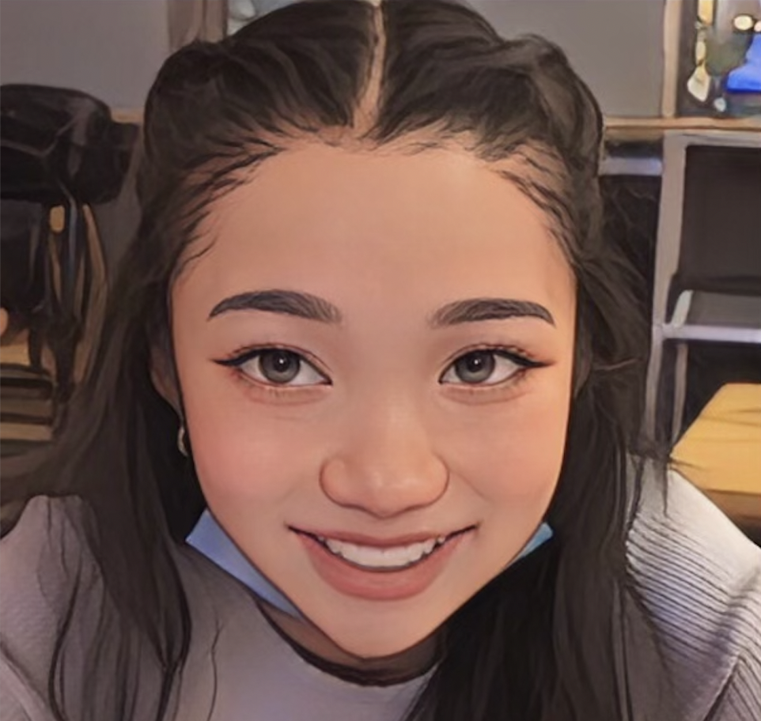

a little about me
hi, my name is katie! i am currently a senior at the university of colorado, boulder. during my time in boulder, i majored in neuroscience and minored in media studies and ctd (creative technology & design).
this portfolio website is a product of my time in my atls 2200 ('22)! the class introduces techniques and concepts of web design and focuses on the technicals of html, css, and javascript.
i hope to apply these foundational skills to future projects in the ux/ui community :D
